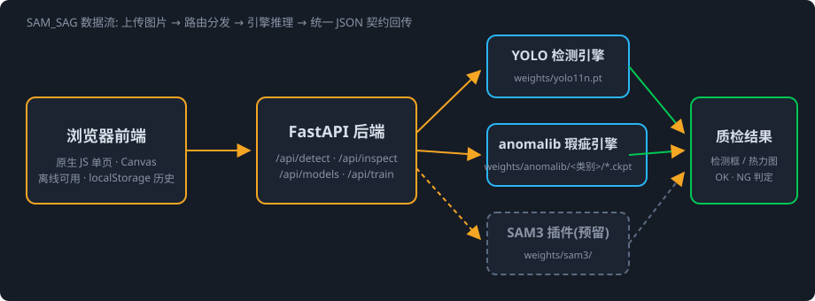
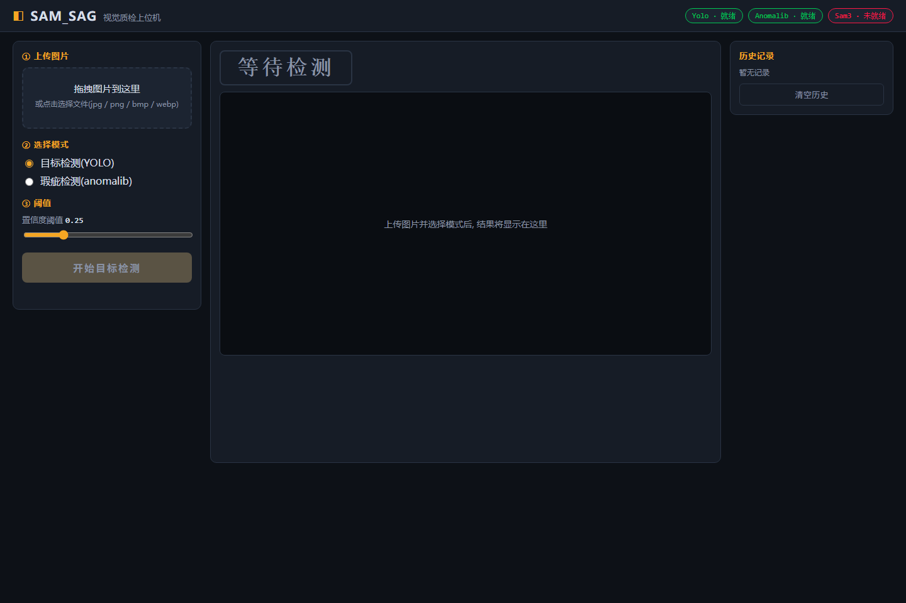
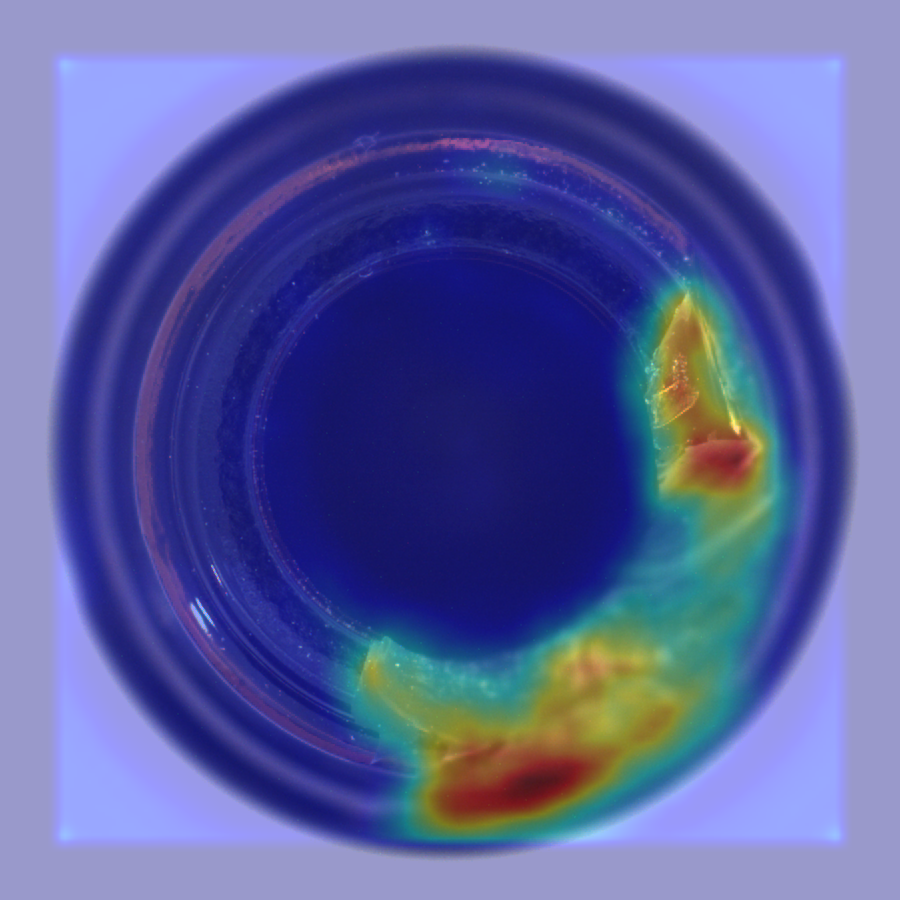
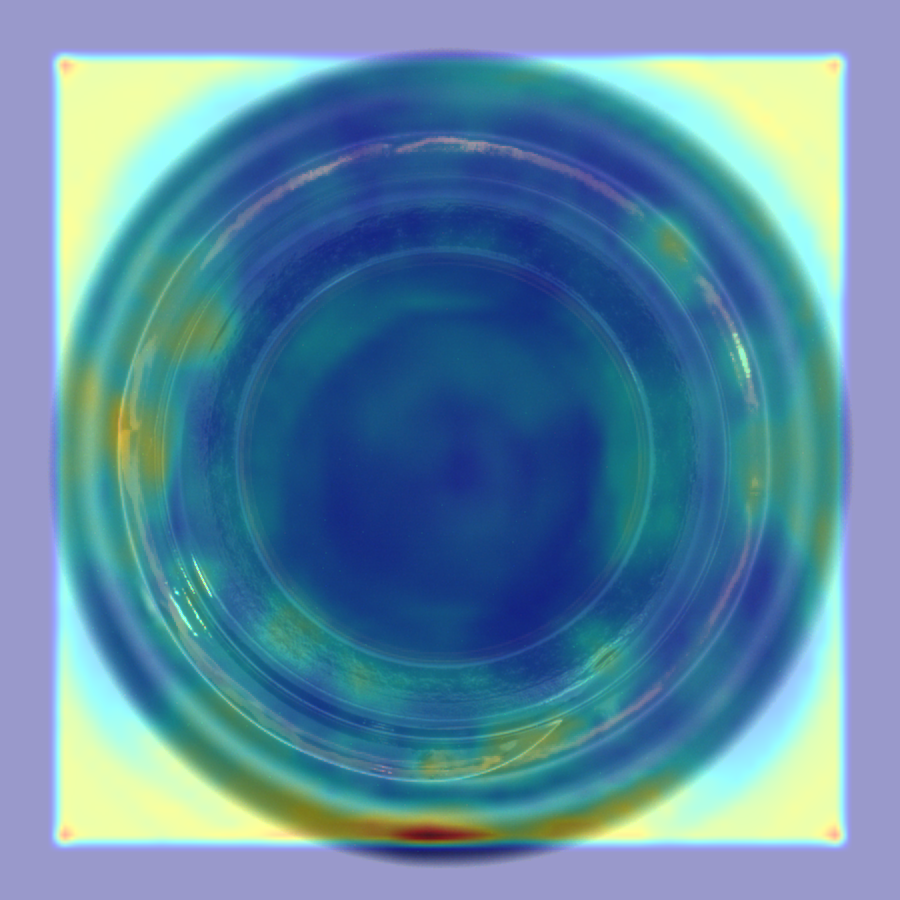
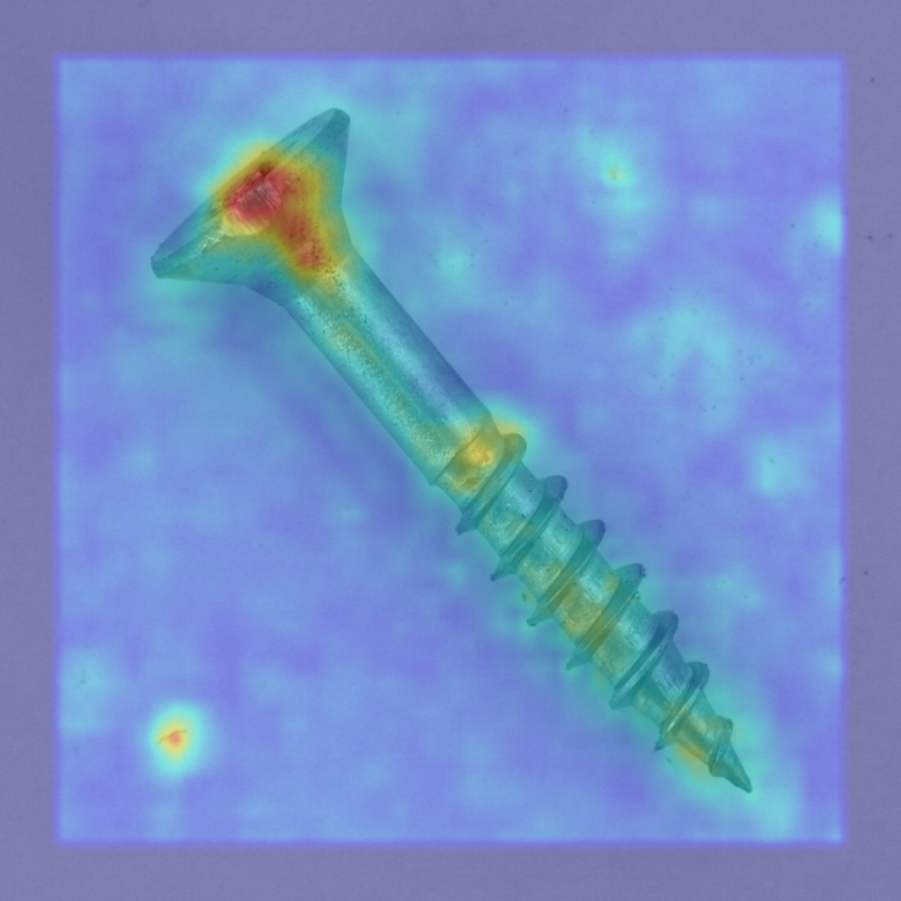
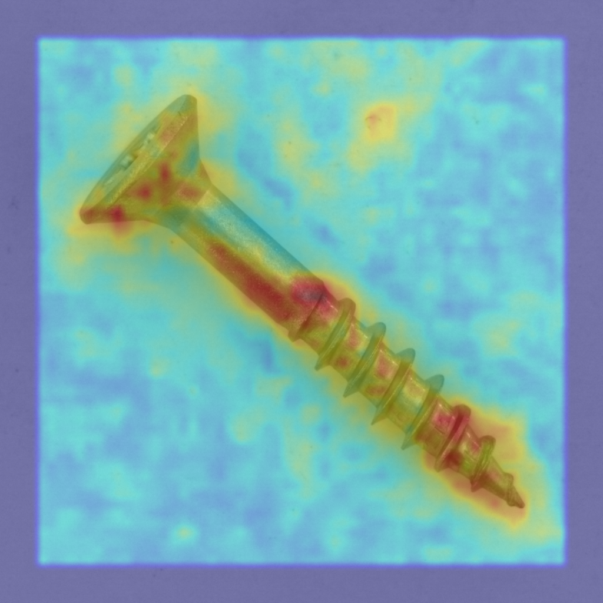
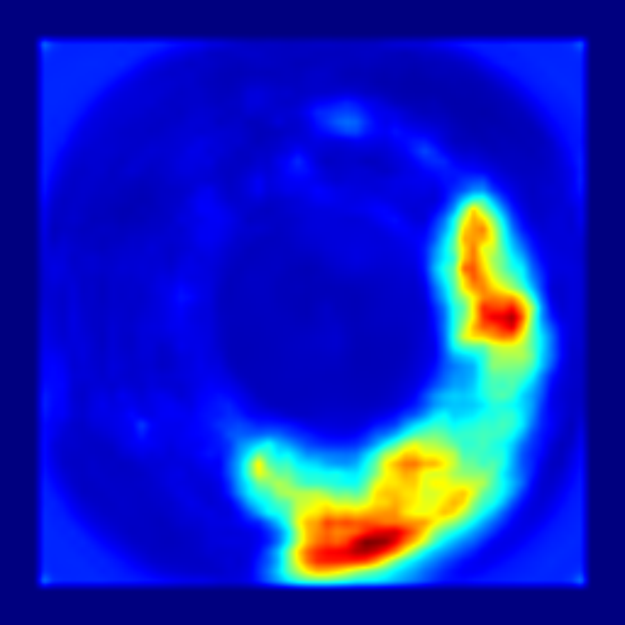
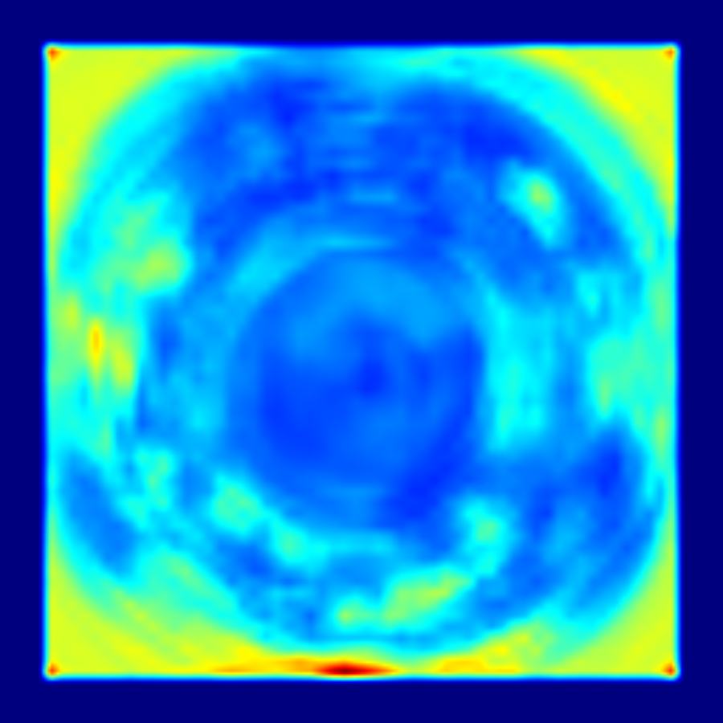
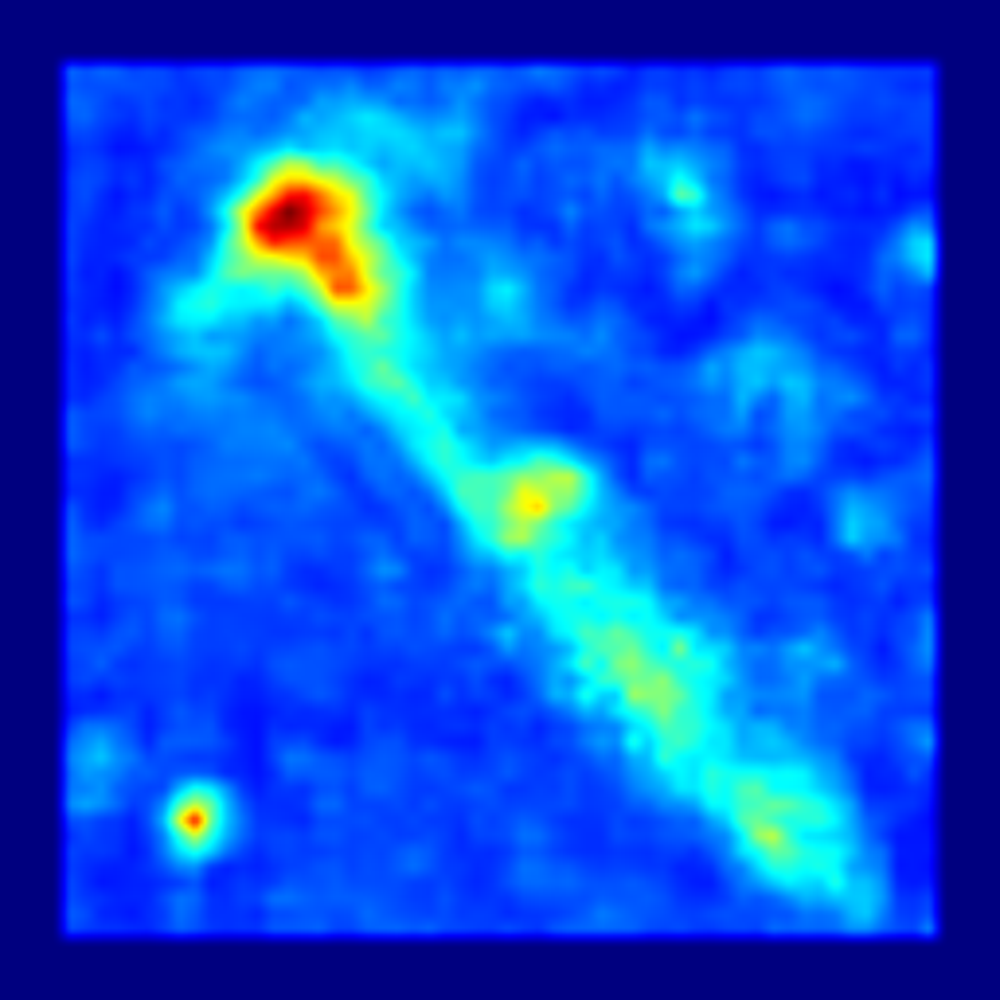
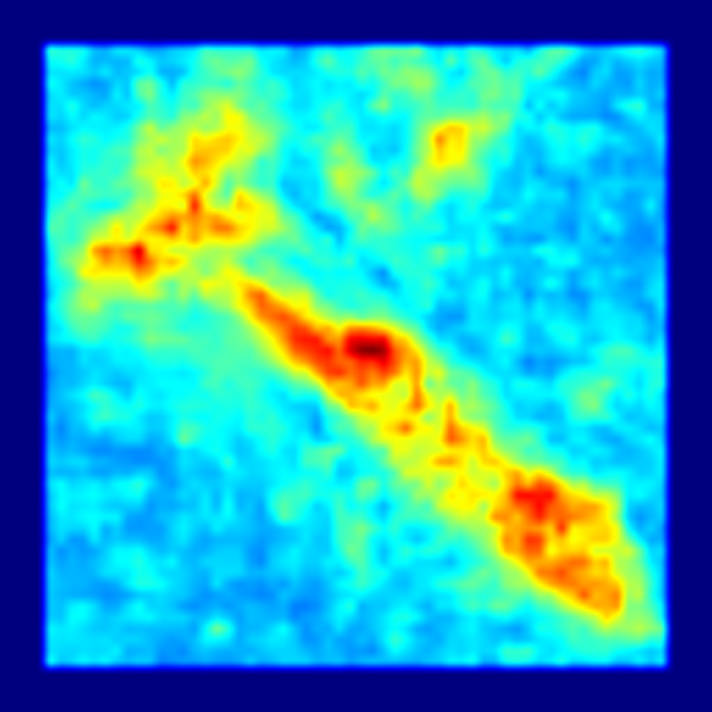

开箱即用的工业视觉质检上位机:上传图片 → 目标检测 / 瑕疵检测 / OK·NG 判定
基于 Ultralytics YOLO。上传图片即可得到检测框、类别标签与置信度,支持自定义数据集微调,一键部署为线上权重。
基于 anomalib(EfficientAD / PatchCore)。只需正常样本即可训练,输出异常分数、JET 热力图叠加与 OK/NG 判定,阈值可调。
输入概念词(如 screw,scratch)即输出实例级掩码与叠加图。基于 Meta SAM 3 sam3.1 fp16(1.6GB),CUDA 上单图约 0.6–1.1 s。

前端为纯原生 JS 单页(离线可用);后端 FastAPI 提供 REST API;模型缺失时优雅降级为 503 提示,不崩溃。









硬件: NVIDIA RTX 3060 Ti(8 GB 显存); 数据集: MVTec AD; 瑕疵检测模型: EfficientAD。当前已训练类别: bottle、screw。
| 类别 | image_AUROC | image_F1 | pixel_AUROC |
|---|---|---|---|
| bottle | 1.000 | 0.992 | 0.976 |
| screw | 0.962 | 0.945 | 0.982 |
| 推理链路 | 单图耗时(RTX 3060 Ti) |
|---|---|
| YOLO 目标检测(/api/detect) | ~48 ms |
| anomalib 瑕疵检测(/api/inspect) | ~400–570 ms |
git clone https://github.com/ccccty/SAM_SAG.git cd SAM_SAG python -m venv .venv && .venv\Scripts\activate pip install torch torchvision --index-url https://download.pytorch.org/whl/cu121 pip install -r requirements.txt python scripts/download_assets.py --yolo start.bat
浏览器自动打开 http://127.0.0.1:8000。瑕疵检测模型训练:python training/train_anomalib.py --category <类别>